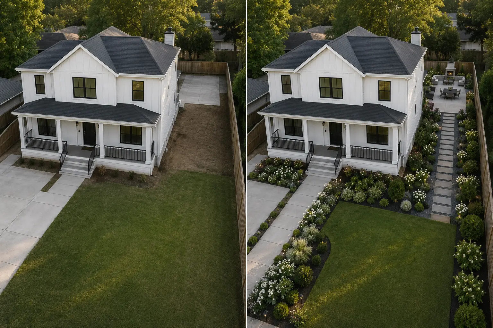
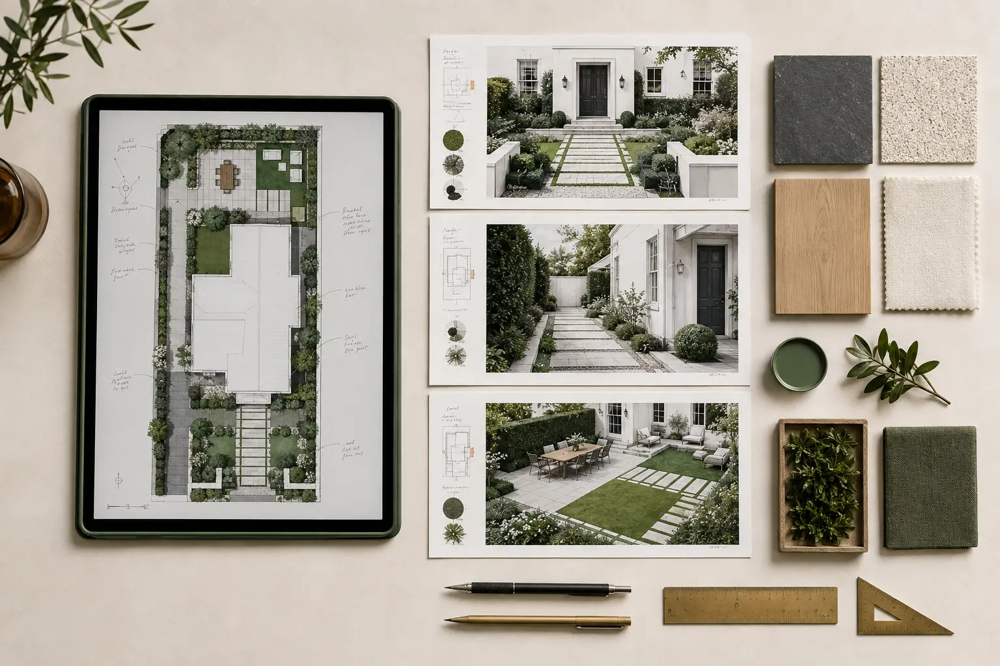

Front + side
Carry the entrance language through a narrow passage without forcing the same layout.
Coordinate arrival, passage, utility, planting and outdoor-living areas through one material and planting language without making every zone identical.
Remote digital design only. Physical landscaping, site visits and installation are not included.

The service is built around a real outdoor problem, not a pre-made style.
Carry the entrance language through a narrow passage without forcing the same layout.
Coordinate open lawn, gathering and perimeter planting as one sequence.
Maintain access while visually integrating necessary equipment.
Repeat materials and plant roles so separate areas stop feeling unrelated.
A visually attractive image is worthless if it blocks windows, narrows circulation, ignores drainage or relies on plants that cannot fit at maturity.
Every visualization must remain labeled so it cannot be mistaken for completed physical installation.
Architecture, property boundaries and fixed features remain the reference for the proposed direction.

Example presentation only. Final contents depend on the purchased scope and selected direction.
Complete inputs are required before the delivery window begins.
Wide views, side angles, a slow walkthrough, location and measurements.
The correct service and package are agreed before Etsy checkout.
Review the custom directions and select one for refinement.
Receive the final visual and practical guidance in 3–5 working days after complete inputs.
The $149 package is the correct starting point for large, complex or multi-area properties after the full photo set and walkthrough are reviewed.
Do not buy a package from this sentence alone. Send the complete area first so the property can be reviewed.
Confirm My ScopeUse the design yourself or share it with a local landscaper. Verify plant suitability, utilities, drainage, product instructions, permits and structural requirements before physical work.
Share clear photos and priorities so the correct scope can be confirmed before Etsy checkout.